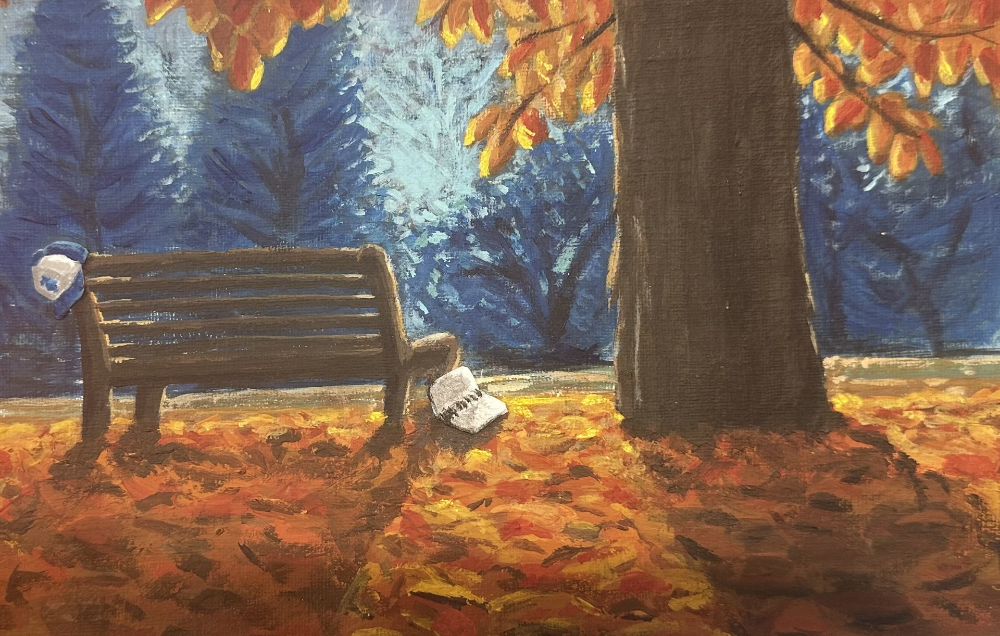
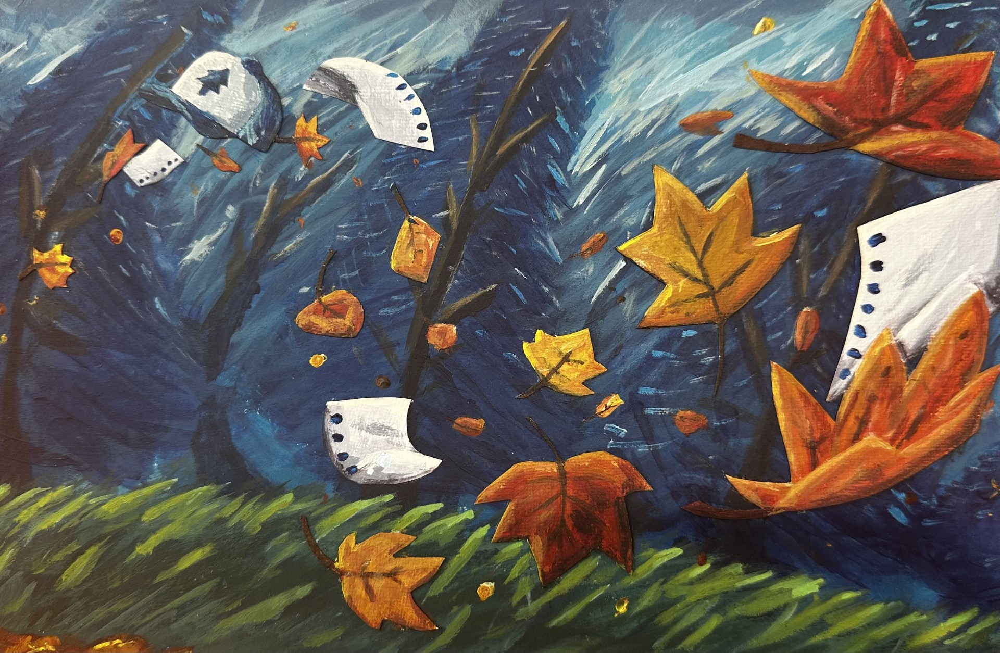
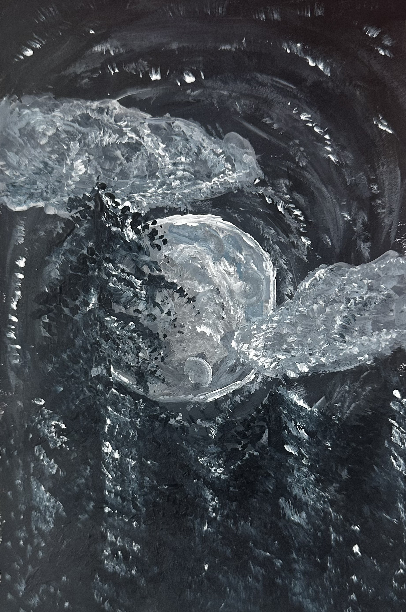
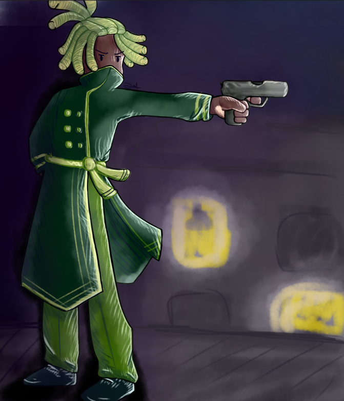
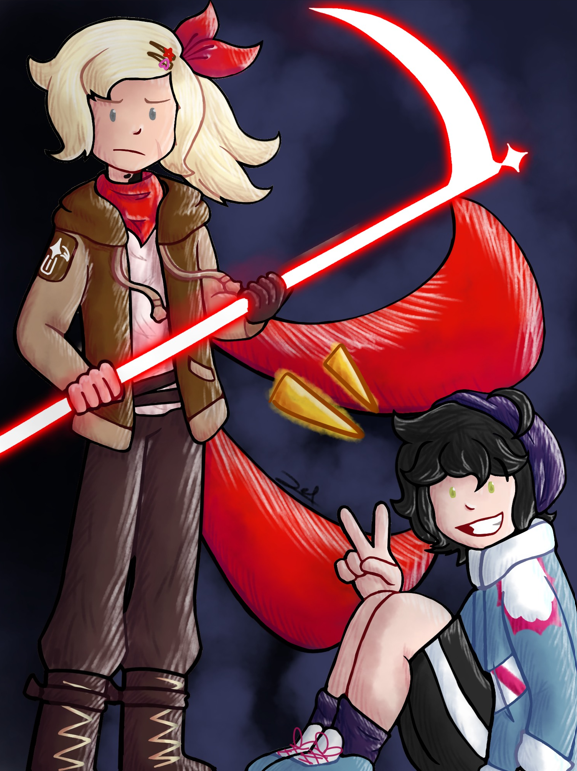
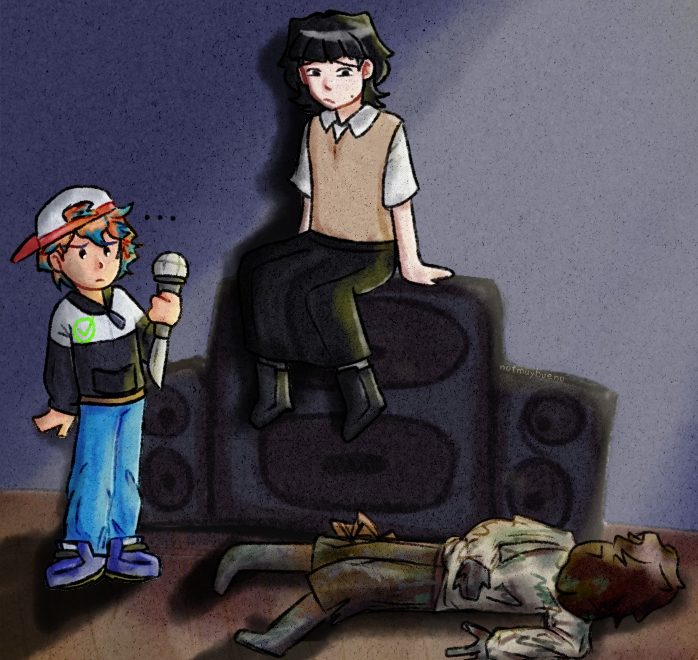
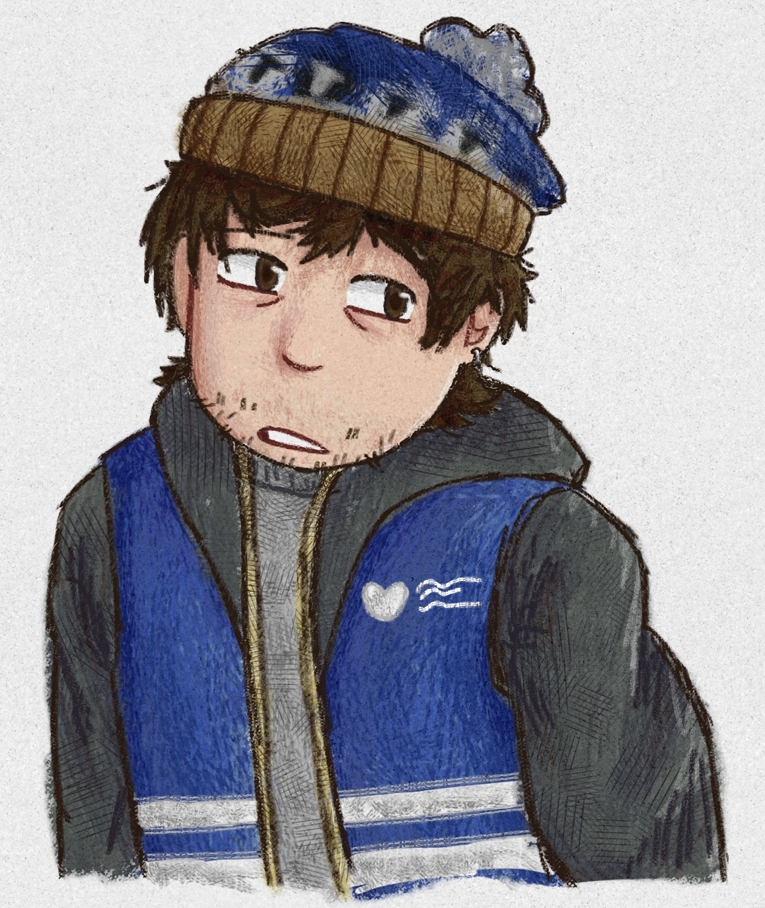

TRADITIONAL ARTWORK:
I.e. artworks done in physical mediums, such as paint, watercolour, pencil, charcoal, etc.
- I don't usually use paint as my main medium, so there's not much here...I don't even paint full stop these were just for school.



DIGITAL ARTWORK:
I.e. artworks done in a digital medium, such as using computers, graphic tablets, and art softwares.
- While these artworks are taken from recent years [2025-2026], some changes in artstyle and/or rendering style may be present since I try to improve with each drawing...whoops.
The artwork below contains original characters created by friends of mine and are not in any way my own. The only thing that is mine is the art itself, not the characters portrayed.




On the right is an example of a way more recent work, since the others don't actually show what my rendering style looks like now. Again, this isn't my original character. It's a character from a movie.--------->